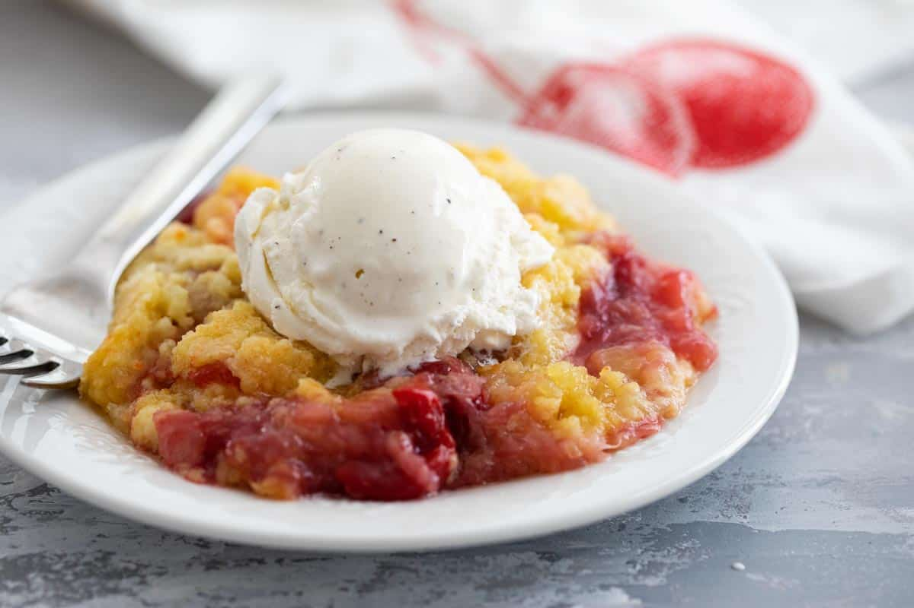

Southern Dump Cake

Ingredients
- Cherry pie filling -- 1 21 oz can
- Crushed pineapple -- 2 8 oz cans
- Yellow cake mix -- 1 package
- Butter -- 1/2 cup (1 stick)
Steps
- Gather all ingredients. Preheat the oven to 350 degrees F (175 degrees C).
- Stir cherry pie filling and crushed pineapple together in a 9x13-inch pan and spread in an even layer.
- Sprinkle dry cake mix evenly over pineapple and cherry mixture.
- drizzle butter on top, making sure minimal dry spots remain.
- Bake in the preheated oven until golden brown on top, about 35 to 40 minutes. Enjoy!